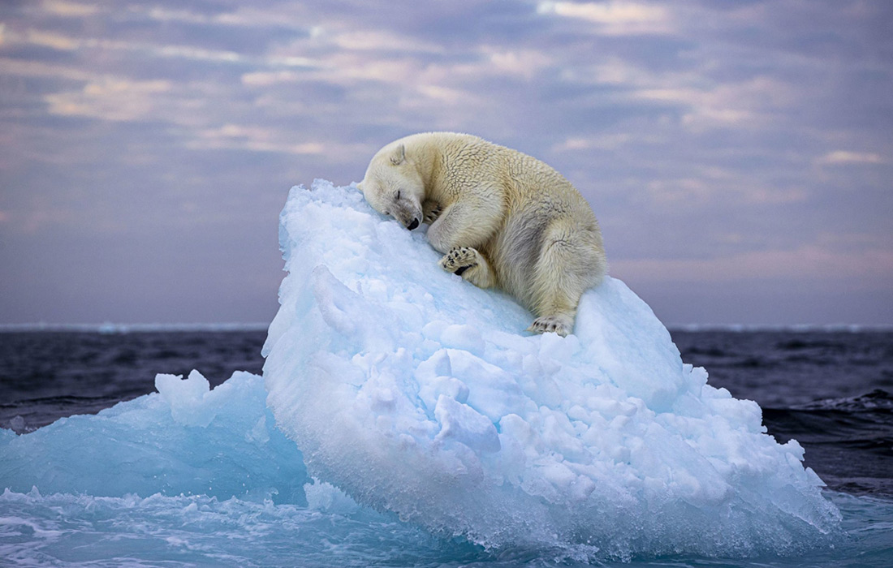
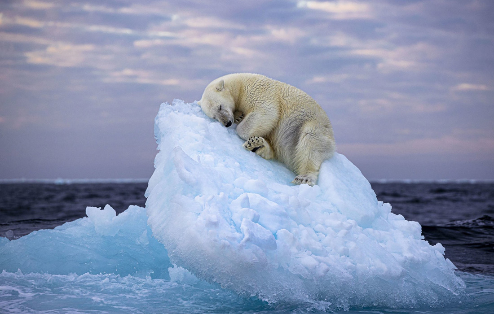

Цветение диких тюльпанов в горах
Дикие тюльпаны или, как их еще называют, Тюльпаны Шренка занесены в Красную книгу России и срывать их запрещено. В начале мая в горах распускаются множество цветов, среди них пожалуй самые яркие и красочные - дикие тюльпаны. Период цветения длится 7-10 дней, но в зависимости от высоты произрастания может продлиться чуть дольше. Встречаются красные, жёлтые и оранжевые окрасы.По размерам дикие тюльпаны меньше, чем садовые, или те, что привыкли видеть в цветочных магазинах. Но не менее красивые, а в окружении горных пейзажей выглядят очень эффектно.
 
